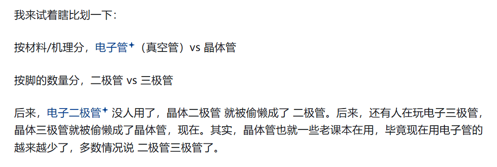
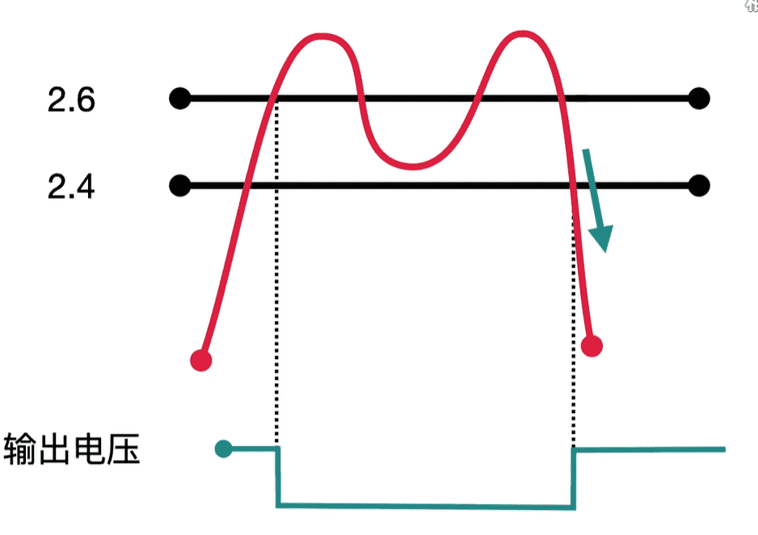
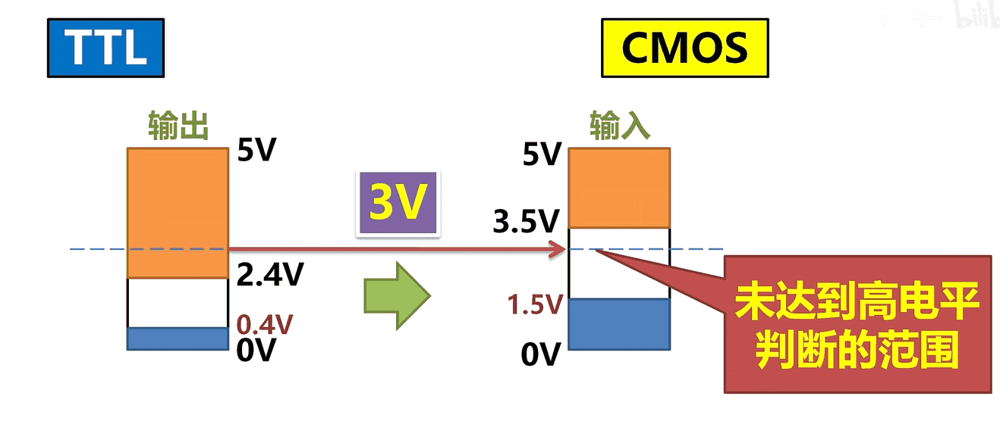

模拟电路记录
因为工作在芯片厂，又和几位模拟电路的同事较为熟悉。非常好奇，在业余时间看了一会模拟电路的知识。总体而言，我认为对于计算机专业的学生而言，模拟电路是有必要学习的，但只要了解 1%就够了。
但是我很庆幸山大的计算机本科不学模拟电路，因为现在的大学教育，开设课程和学习到有用知识完全是两码事。事实上，计算机专业开设了模电课的那些学校的学生，对这一决定基本都是吐槽的。的确如此，作为计算机专业的学生而言，陷于各种电路分析、各种元器件的伏安特性曲线理解，一定充满了痛苦。
我之所以认为计算机应该学习模电，是学完后能让自己对计算机、对自己的专业又有了一丝倾佩，真是人类智慧的伟大体现啊。计算机从二进制实现一个个强大的功能，这是伟大的智慧。0 和 1 是伟大的抽象，相信许多计算机的学生都深有体会，这样的感悟会发生在数电、操作系统等课程上。而这种抽象是怎么从物理世界构建的，这是学习模电所能解答的，在学习模电的时候，当看到数字上的抽象如何在物理上被解释时，忍不住再一次感叹计算机的伟大。
换言之，我认为计算机专业的学生学习模拟电路，一定要充分利用我们计算机无处不在的封装、分层的思想，不要拘泥于各种电路分析，不理解的地方就当成定理、当成黑盒子来看待就好。比如三极管中的放大系数，不同区域下不同情况，我觉得不用太去理解，甚至不用去细看。
下面是我学习的记录：
1. 基础器件：二极管、三极管、MOS管、晶体管
- 二极管可以多了解一点，上交的课程教的不错。我学习时并没有去按照多子少子理解，就只看电子的移动就行，然后把电源的正负极去理解成磁铁，这样就很容易懂。虽然不正规，但要始终铭记自己学习模电是当成科普来看的。
- 稳压二极管，也不用知道为什么它反向击穿能一直维持电压，B 站一个视频介绍。
- 三极管我就看了 B 站上的一个动画讲解。里面涉及到一个放大倍数，我不想去知道为什么这个放大倍数是一样的，当成定理来看。总而言之，三极管起到了一个放大的作用。好像很惨，放大作用被运放取代，开关作用被 MOS 管取代。
- MOS 管，当成三极管的替代，应用场景主要是开关。把 MOS 管理解成电压控制、三极管电流控制的。反正他比三极管优点太多了，除了贵一点点。B站视频链接
- IGBT，也是一个开关。用在一些高铁、汽车大电压大电流会用。B站视频链接
然后就是晶体管是什么？为什么大模型说：二极管不是晶体管，三极管是晶体管。其实...二级三级这些都是结构上，而晶体管对比的叫真空管，是材料上的差异。正确应该是叫晶体二极管和晶体三极管，这样才有区别于真空二极管和三极管。

2. 后面根据西电的课程来看
课程视频：https://www.bilibili.com/video/BV15x411o7Nw
首先是绪论，这个绪论讲的特别好：
- 把电子器件的发展情况讲的让我理解了，从电子管到三极管，然后到后来的结形管、MOS管等等，尤其是里面谈到晶体管在二战时暴露的缺点，让我感觉这个发展的确非常有逻辑性。
- 然后绪论里面提到了一个特别重要的负反馈概念，并基于此引出运算放大器的登场，我感觉太合理了。
3. 运放的虚短和虚断的介绍
这里不用去过分的理解虚短和虚断，用高中（初中？）知识去思考即可，知道这两个概念是由公式推导出来的，然后把他们当成定理即可。而这两个概念在后续的课程里面会反复提到，所以这里是让脑子有个印象，而不至于到后面一脸迷糊。
4. 放大器、相加器、相减器各种器件
放大器和相加器可以细节看看，看一下如何是用虚短和虚断推出电路的作用的。后面的相减器、积分器等等，我就是直接走马观花了，许多地方不求甚解，没有仔细去想。目的是去明白在只用模拟时的那个年代，其实电子工程师已经能做出相当强大的东西了。
后面的 I-V 变换器 更加粗略看了，我只看了这是个什么玩意，用图表示是什么样子。而后面的 RC 滤波器，更加没看了，毕竟高通低通这些玩意早就是别的课程基础中的基础了，模电上则是讲如何用模拟器件实现他们。
我当时的记录：./运放.xmind
5. 比较器
按照顺序，之后就是比较器。这里可以细节看看，因为不难...看的时候紧紧记住一点：他就是通过运放开环来的。而且比较器这里有几个耳熟能详的应用，有：波形整形、脉宽调制（PWM）
- 通过对比较器的理解，进一步感觉模拟器件相比数字器件有很大的不同。
- 知道名词：施密特触发器，作用：模拟波形转化为方波。知道它的内部一个巧妙原理：迟滞比较，这个思想在信号处理上都是有用的，B 站视频讲的很好。

6. 振荡器
知道振荡器是什么，就是生成各种周期波的玩意。这里有两个部分，第一个是 3.2 节的方波、三角波这种的；然后是 8.6 节的正弦波，这一小节甚至只要看前面一小点就行，后面的各种细节都可以直接略过。
7. 跳过一部分
- 第四章就是介绍半导体各种物理元件，这个是第一部分就看了，所以就跳过。里面虽然还介绍了场效应管等等器件，但是没必要去看了，这里很多地方太细节了。
- 第五章是介绍基本放大器的实现。这里也不看，由于在第一小节看了一点三极管的知识，知道它有放大的作用，所以把这章就理解成用三极管实现运放里面的放大器就行。
8. 集成电路
跳了很多很多，然后到了 6.1 节，这是一个很重要的一节，通过这里能知道：原来集成电路和普通的电路是两码事，你会感觉集成电路真是人类工艺上的杰作。
- 电阻、电容尽量少做，尤其是电容，成本极高，举的例子中某个芯片的内部电路居然只用了一个电容。为什么成本高？面积大。
- 包括后面的 6.2 节电流源电路刚开始的一小块，知道集成电路上用电流源替代电阻，能进一步体会出集成电路的特别之处。
- 差动放大器简单看看，走马观花。看这一小节，感觉到模电真是要遇到很多细节问题，比如一个简单的减法器，没想到也会牵涉很多的分析。
9. 功率放大器
只看第一小节，知道功率放大器是啥玩意就行。
10. 从 MOS 管到 数字电路
这里看 B 站的视频（https://www.bilibili.com/video/BV1sA2nYsEVS）第 15 和 第 16 节，讲的很好。总之通过对 MOS 管输出电压的抽象，得到了数字电路的基本单元：门，从此走向数字电路的世界。再见，模电！
需要知道 CMOS 和 TTL 分别表示什么东西，CMOS 就是用 MOS 管进行搭建的电路，TTL 是用三极管搭建的电路。因为不同器件的特性，导致高低电平的范围不同。

11. 问题汇总
- 有一个小问题很有意思：为什么用电压而不是电流作为模拟转电路的桥梁？
解答：有很多原因，具体直接问大模型。其中一个原因是功耗，最简单的理解电路断开的时候，也有电压，此时功耗相当于是 0 了，这真是件好事情，而电流就做不到。其实 MOS 管就是类似，电压在高区间和低区间时，电流都很小，所以功耗很低。具体可以看清华大学数字电路课程第九章41分钟，不用细细理解，去体会这个很巧妙的设定。